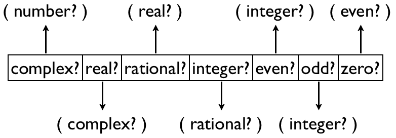

João Loff - 56960
Alexandre Almeida - 64712
Tiago Aguiar - 64870
Generic Functions
(struct generic-function (name parameters)
#:mutable #:property prop:procedure
(lambda (f . params-list)
(generic-function-protocol f params-list)))
Concrete Methods
(struct concrete-method (name types func)
#:mutable)
Generic Functions
(define-syntax defgeneric
(syntax-rules ()
[(defgeneric name (params ...))
(begin
(define name (generic-function 'name '(params ...)))
(add-to generic-functions-table 'name (concrete-methods-list)))]
Concrete Methods
(define-syntax-rule
(defmethod name ((params type) ...) body ...)
(if (hash-has-key? concrete-methods-table method-key)
(remove-method-from-concrete-list 'name concrete-methods-list))
(add-to generic-functions-table 'name new-method concrete-methods-list)
(add-to concrete-methods-table method-key '(body ...)))
How it ended up
(define (check-possible-cycle child parent)
(define (check-cycle-aux child parents-lst)
(cond ((empty? parents-lst) #f)
((eq? child (first parents-lst)) #t)
((hash-has-key? type-graph
(first parents-lst))
(check-cycle-aux child (hash-ref type-graph (first parents-lst))))
(else (check-cycle-aux child (rest parents-lst)))))
(and (hash-has-key? type-graph parent)
(check-cycle-aux child (hash-ref type-graph parent))))
(struct generic-function (name parameters args-order combination-proc) ...)
struct concrete-method (name types role func types-ordered combination-proc) #:mutable)
Add to parents list
Add another recursive pass in Parent Search
(defsubtype zero? number?)
(defgeneric showme (x y) #:argument-precedence-order y x)
(defmethod showme ((x zero?) (y number?)) (display "first"))
(defmethod showme ((x number?) (y zero?)) (display "second"))
(showme 2 0)
Result: second
(showme 0 2)
Result: first
(defgeneric add (x y) #:method-combination list)
(defmethod add ((x number?) (y number?)) (+ x y))
(defmethod add ((x integer?) (y integer?)) (+ x y 10))
(defmethod add ((x integer?) (y zero?)) (+ x y 100))
(add 1 1)
Result: '(2 12)
(add 1 0)
Result: '(1 11 101)
From precedence-type ordering